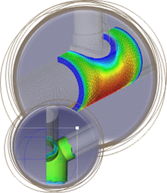

Eskom RT&D
Mechanical structures and components used in the power generation industry suffer from a wide range of in service damage mechanisms including fatigue, stress corrosion cracking, creep, erosion, corrosion and embrittlement. These damage mechanisms reduce the life of these components from a safety, fit for purpose and economic point of view and need to be assessed and optimally managed in order to obtain Eskom objectives. The Structural Integrity group within the Physical Metallurgy Section (Eskom RT&D Division) provides Eskom wide technical expertise in the areas of finite element analysis, mechanical structural integrity, code applications and interpretations as well as fit for purpose, risk based inspection, failure and residual life assessments required for the effective life management of all major components. In service defects leading to failure or discovered during inspections are investigated to determine the damage mechanism/s as well as the drivers of these under design or other conditions. Components are assessed for structural integrity with regards to likely failure modes including fast fracture, plastic collapse, buckling and functional failure, taking into account required planned inspection intervals.
In some cases plant modifications for the removal of defects and/or the prevention of damage mechanisms are engineered, to code requirements where applicable, and implemented. For cases where immediate repair or replacement is not possible risk based inspection (RBI) strategies are developed after analytically demonstrating acceptable safety factors. Where such RBI strategies are employed the critical flaw sizes and required performance level of non-destructive-examination (NDE) techniques are established and specified. Considerable finite element analysis (FEA) capabilities and experience have been developed for steady state, transient, dynamic and modal analysis which is required to obtain detail stress, elastic and plastic strain, creep strain and vibration response information, amongst others Components typically analysed include:
|
 |
Software: FreeCAD, Calculix, OpenFOAM & Python